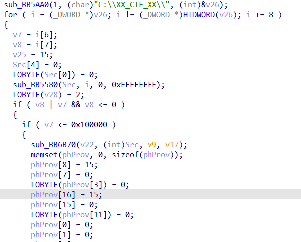
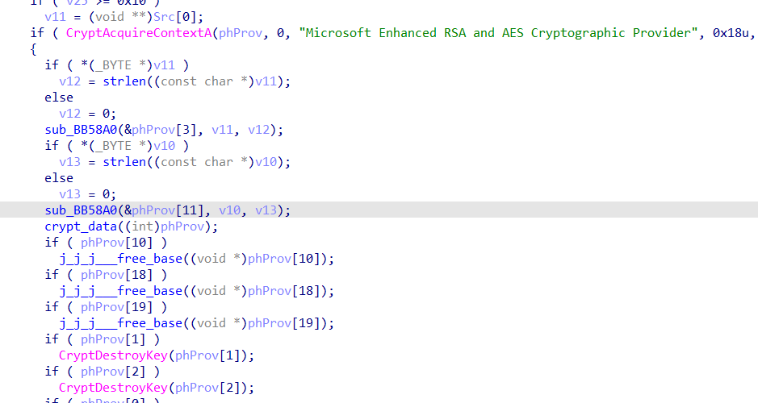
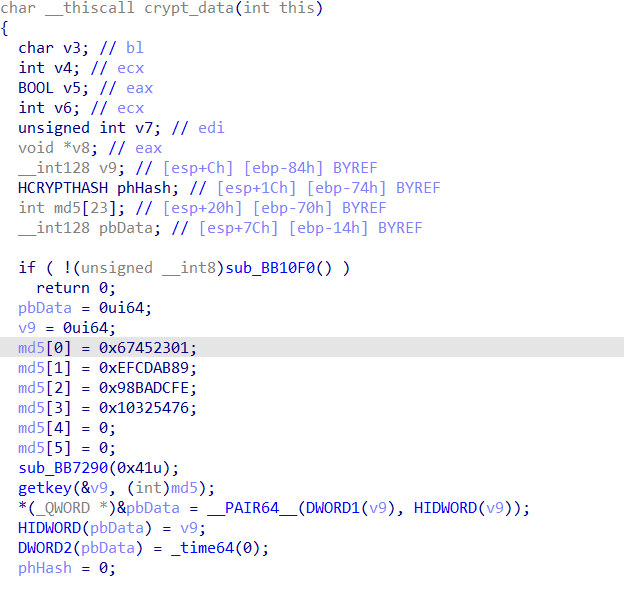
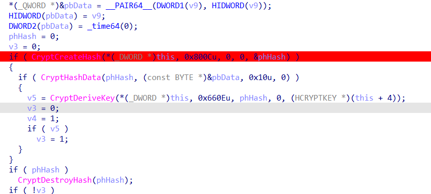
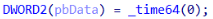
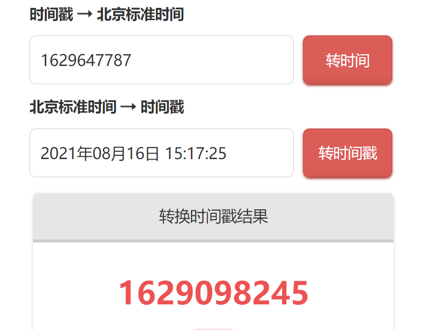
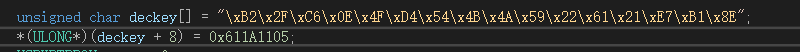
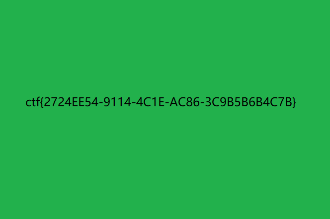

祥云杯2021 勒索解密
拿到exe,拖入ida静态分析
发现exe一开始就遍历"C:\XX_CTF_XX"目录下的文件


来到这个函数

这个函数获取了一个固定数据的md5,所以最后得出的md5也是固定不变的

将md5经过一些转换变成AES加密的key
关键在于这行代码:

这行代码将key的第三个双字节赋值为当前时间戳
1mb大小的文件至少现在的cpu加密过程肯定不会超过半秒,这就是该题目所描述的漏洞
结合比赛平台下发的zip包里的时间数据,在线平台拿到对应时间戳

动态调试拿到key,再写入当时的时间戳

这个就是当时加密该文件的正确key了
然后模拟exe加密流程解密就行
解密出来bmp:

完整解密代码:
#include <iostream>
#include "windows.h"
#include "wincrypt.h"
int main()
{
unsigned char deckey[] = "\xB2\x2F\xC6\x0E\x4F\xD4\x54\x4B\x4A\x59\x22\x61\x21\xE7\xB1\x8E";
*(ULONG*)(deckey + 8) = 0x611A1105;
HCRYPTPROV prov = 0;
CryptAcquireContextA(&prov, NULL, "Microsoft Enhanced RSA and AES Cryptographic Provider", PROV_RSA_AES, CRYPT_VERIFYCONTEXT);
HCRYPTHASH hash = 0;
CryptCreateHash(prov, 0x800C, 0, 0, &hash);
HCRYPTKEY pkey = 0;
CryptHashData(hash, (BYTE*)deckey, 0x10, 0);
CryptDeriveKey(prov, 0x660E, hash, 0, &pkey);
DWORD pppp = 1;
CryptSetKeyParam(pkey, 4u, (BYTE *)&pppp, 0);
DWORD vfvf = 1;
CryptSetKeyParam(pkey, 3u, (BYTE*)&vfvf, 0);
HANDLE hFile = CreateFileA("flag.bmp.ctf_crypter", GENERIC_ALL, 1, 0, 3, 0, 0);
DWORD sz = GetFileSize(hFile, 0);
PUCHAR pdata = (PUCHAR)malloc(sz+9999999);
DWORD read = 0;
ReadFile(hFile, pdata, sz, &read, 0);
HCRYPTKEY v2; // eax
BOOL end; // edx
int i_1; // ebx
int off; // ecx
int filesz; // eax
BOOL v9; // [esp+4h] [ebp-18h]
int i; // [esp+8h] [ebp-14h]
BYTE v11[4]; // [esp+Ch] [ebp-10h] BYREF
BYTE pbData[4]; // [esp+10h] [ebp-Ch] BYREF
DWORD pdwDataLen; // [esp+14h] [ebp-8h] BYREF
PUCHAR use_pdata = pdata;
int v3 = 0;
if (sz % 16) {
v3 = sz / 16 + 1;
}
else {
v3 = sz / 16;
}
end = 0;
i_1 = 0;
v3 = sz;
off = 0;
filesz = v3 - 1;
for (i = 0; ; i += 16)
{
pdwDataLen = 16;
if (i_1 == filesz)
end = 1;
v9 = end;
if (!CryptDecrypt(pkey, 0, end, 0, (BYTE*)(off + use_pdata), &pdwDataLen))
break;
if (off > sz)
break;
printf("%X\n", off);
++i_1;
off = i + 16;
filesz = v3 - 1;
end = v9;
if (i_1 >= v3)
return 1;
}
HANDLE hFile2 = CreateFileA("flag.bmp", GENERIC_ALL, 1, 0, CREATE_ALWAYS, 0, 0);
WriteFile(hFile2, pdata, sz, &read, 0);
std::cout << "Hello World!\n";
}